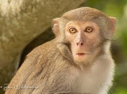

MONOS EN EL MUNDO
| especie |
foto |
Mono ardilla (Saimiri sciureus)
- Peso: 0.5-1.5 kg
- Longitud: 25-35 cm
- Color: Gris con cara blanca
- Habitat: Bosques tropicales de América del Sur
- Características: Cola larga y delgada, dedos afilados,
dieta omnívora
- Comportamiento: Social, vive en grupos de hasta 100 individuos |
|
Mono capuchino (Cebus capucinus)
- Peso: 3-6 kg
- Longitud: 35-45 cm
- Color: Marrón con cara blanca
- Habitat: Bosques tropicales de América Central y del Sur
- Características: Frente plana, nariz ancha, dieta
omnívora
- Comportamiento: Inteligente, utiliza herramientas para obtener alimentos
|
 |
Mono tamarín (Saguinus fuscicollis)
- Peso: 0.2-0.5 kg
- Longitud: 20-30 cm
- Color: Marrón con cara blanca
- Habitat: Bosques tropicales de América del Sur
- Características: Cola larga y delgada, dedos afilados,
dieta frugívora
- Comportamiento: Social, vive en grupos de hasta 15 individuos
|
|
Mono tití (Callicebus donacophilus)
- Peso: 1-2 kg
- Longitud: 30-40 cm
- Color: Marrón con cara blanca
- Habitat: Bosques tropicales de América del Sur
- Características: Cola larga y delgada, dedos afilados,
dieta frugívora
- Comportamiento: Monógamo, vive en parejas
|
|
Mono uacarí (Cacajao calvus)
- Peso: 3-6 kg
- Longitud: 40-50 cm
- Color: Negro con cara roja
- Habitat: Bosques tropicales de América del Sur
- Características: Frente plana, nariz ancha, dieta frugívora
- Comportamiento: Social, vive en grupos de hasta 100 individuos
|
|
Monos del Viejo Mundo
|
Mono rhesus (Macaca mulatta)
- Peso: 5-10 kg
- Longitud: 40-60 cm
- Color: Marrón con cara rosada
- Habitat: Bosques y montañas de Asia
- Características: Cola corta y gruesa, dedos afilados, dieta omnívora
- Comportamiento: Inteligente, utiliza herramientas para obtener alimentos
|
 |
Mono mandril (Mandrillus sphinx)
- Peso: 10-20 kg
- Longitud: 50-70 cm
- Color: Negro con cara roja
- Habitat: Bosques tropicales de África
- Características: Frente plana, nariz ancha, dieta frugívora
- Comportamiento:
Social, vive en grupos de hasta 1000 individuos
|
|
Mono langur (Semnopithecus entellus)
- Peso: 10-20 kg
- Longitud: 50-70 cm
- Color: Gris con cara blanca
- Habitat: Bosques y montañas de Asia
- Características: Cola larga y delgada, dedos afilados, dieta frugívora
- Comportamiento: Social, vive en grupos de hasta 100 individuos
|
 |
Mono colobo (Colobus guereza)
- Peso: 5-10 kg
- Longitud: 40-60 cm
- Color: Negro con cara blanca
- Habitat: Bosques tropicales de África
- Características: Cola larga y delgada, dedos afilados, dieta frugívora
- Comportamiento: Social, vive en grupos de hasta 20 individuos
|
|
Monos grandes
|
Gorila (Gorilla gorilla)
- Peso: 150-220 kg
- Longitud: 1.5-1.8 m
- Color: Negro
- Habitat: Bosques tropicales de África
|
 |
Chimpancé (Pan troglodytes)
- Peso: 40-80 kg
- Longitud: 1.2-1.5 m
- Color: Negro
- Habitat: Bosques tropicales de África
|
|
Orangután (Pongo pygmaeus)
- Peso: 30-60 kg
- Longitud: 1.2-1.5 m
- Color: Rojo
- Habitat: Bosques tropicales de Asia
|
|
Indice
Bosques Tropicales
- Los bosques tropicales son el hábitat más común de los monos, y se caracterizan por una alta temperatura y humedad, con una gran cantidad de especies de plantas y animales.
- Estos bosques se encuentran en regiones
tropicales y subtropicales, y pueden ser clasificados en diferentes tipos, como bosques húmedos, bosques secos y bosques nubosos.
- Los monos que habitan en bosques tropicales incluyen a los monos del Nuevo Mundo, como los capuchinos y los
titíes, y a los monos del Viejo Mundo, como los macacos y los langures.
- Los bosques tropicales ofrecen una gran cantidad de alimentos para los monos, como frutas, hojas, insectos y pequeños animales.
Selvas
- Las selvas son bosques densos y húmedos que se encuentran en regiones tropicales, y son el hábitat de muchos monos.
- Las selvas se caracterizan por una alta densidad de vegetación, con árboles y arbustos que crecen muy
juntos.
- Los monos que habitan en selvas incluyen a los monos ardilla y a los monos tamarín.
- Las selvas ofrecen una gran cantidad de alimentos y refugio para los monos, y son un hábitat importante para su supervivencia.

Manglares
- Los manglares son ecosistemas costeros que se encuentran en regiones tropicales y subtropicales, y son el hábitat de algunos monos.
- Los manglares se caracterizan por una vegetación adaptada a la salinidad y la inundación,
con árboles y arbustos que crecen en el agua.
- Los monos que habitan en manglares incluyen a los monos proboscis y a los monos colobus.
- Los manglares ofrecen una gran cantidad de alimentos para los monos, como frutas, crustáceos y peces.
Montañas
- Las montañas son un hábitat importante para algunos monos, como los monos langur y los monos macaco.
- Las montañas se caracterizan por un clima más frío y una disponibilidad de alimentos más limitada que los bosques
tropicales.
- Los monos que habitan en montañas deben adaptarse a un entorno más difícil, con menos alimentos y más predadores.
- Las montañas ofrecen un hábitat único para los monos, con una gran cantidad de vegetación y animales adaptados
al clima más frío.

Hábitats Acuáticos
- Algunos monos, como los monos proboscis y los monos colobus, habitan en hábitats acuáticos, como ríos y lagos.
- Estos monos se alimentan de peces, crustáceos y otras especies acuáticas.
- Los hábitats
acuáticos ofrecen una gran cantidad de alimentos para los monos, y son un hábitat importante para su supervivencia.
- Los monos que habitan en hábitats acuáticos deben adaptarse a un entorno más difícil, con una gran cantidad de predadores
y una disponibilidad de alimentos más limitada.
Hábitats Terrestres
- La mayoría de los monos habitan en hábitats terrestres, como bosques, selvas y montañas.
- Los monos terrestres se alimentan de frutas, hojas, insectos y otros pequeños animales.
- Los hábitats terrestres
ofrecen una gran cantidad de alimentos y refugio para los monos, y son un hábitat importante para su supervivencia.
- Los monos que habitan en hábitats terrestres deben adaptarse a un entorno más difícil, con una gran cantidad de predadores
y una disponibilidad de alimentos más limitada.
Indice
Introducción
Los monos son primates que se encuentran en diferentes partes del mundo, desde los bosques tropicales de América del Sur hasta las montañas de Asia. Sin embargo, muchos de estos animales están en peligro de extinción debido
a la pérdida de hábitat, la caza y el tráfico ilegal. En este informe, se presentará una investigación extensa sobre los monos que están en peligro de extinción, incluyendo las especies más amenazadas, las causas de la extinción y las medidas
de conservación.
Especies de monos en peligro de extinción
1. Mono de cara blanca (Cebus capucinus): Esta especie se encuentra en los bosques tropicales de América Central y del Sur, y está en peligro de extinción debido a la pérdida
de hábitat y la caza.
2. Mono araña (Ateles geoffroyii): Esta especie se encuentra en los bosques tropicales de América Central y del Sur, y está en peligro de extinción debido a la pérdida de hábitat y la caza.
3. Mono howler (Alouatta
palliata): Esta especie se encuentra en los bosques tropicales de América Central y del Sur, y está en peligro de extinción debido a la pérdida de hábitat y la caza.
4. Mono langur (Semnopithecus entellus): Esta especie se encuentra en los
bosques y montañas de Asia, y está en peligro de extinción debido a la pérdida de hábitat y la caza.
5. Mono proboscis (Nasalis larvatus): Esta especie se encuentra en los bosques y manglares de Asia, y está en peligro de extinción debido
a la pérdida de hábitat y la caza.
6. Mono colobo (Colobus guereza): Esta especie se encuentra en los bosques y montañas de África, y está en peligro de extinción debido a la pérdida de hábitat y la caza.
7. Mono tití (Callicebus donacophilus):
Esta especie se encuentra en los bosques tropicales de América del Sur, y está en peligro de extinción debido a la pérdida de hábitat y la caza.
8. Mono uacarí (Cacajao calvus): Esta especie se encuentra en los bosques tropicales de América
del Sur, y está en peligro de extinción debido a la pérdida de hábitat y la caza.
Causas de la extinción
1. Pérdida de hábitat: La deforestación y la destrucción de hábitats naturales son las principales causas de la extinción de
los monos.
2. Caza: La caza de monos para obtener carne y otros productos es otra causa importante de la extinción.
3. Tráfico ilegal: El tráfico ilegal de monos es una causa significativa de la extinción, ya que muchos monos son capturados
y vendidos como mascotas o para la investigación científica.
4. Enfermedades: Las enfermedades transmitidas por humanos, como la gripe y el sarampión, pueden ser mortales para los monos.
5. Cambio climático: El cambio climático puede afectar
la disponibilidad de alimentos y el hábitat de los monos, lo que puede llevar a la extinción.
Medidas de conservación
1. Protección de hábitats: La protección de hábitats naturales es fundamental para la conservación de los monos.
2. Control de la caza: El control de la caza y el tráfico ilegal es esencial para proteger a los monos.
3. Educación y conciencia: La educación y conciencia sobre la importancia de la conservación de los monos pueden ayudar a reducir la caza
y el tráfico ilegal.
4. Investigación científica: La investigación científica puede ayudar a entender mejor las necesidades de los monos y a desarrollar estrategias efectivas de conservación.
Indice